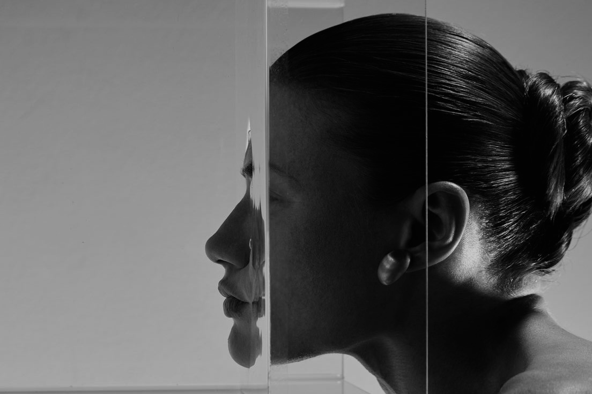

You have enough. But why doesn't it feel that way?
We always want more. But where does that desire come from? And when does "more" actually become enough?

We always want more. But where does that desire come from? And when does "more" actually become enough?
We think we’ll be happier if we have more. More likes, a better body, a better life. But as soon as we achieve what we wanted, the goalposts shift again.
What felt like enough yesterday suddenly feels like too little today.
SO WE WANT MORE.